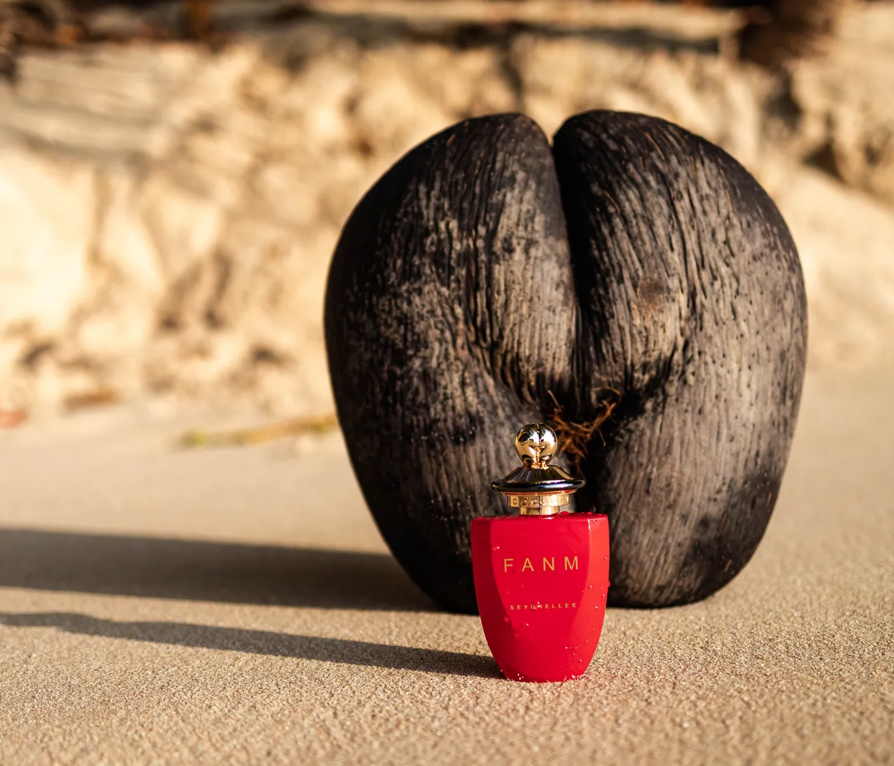
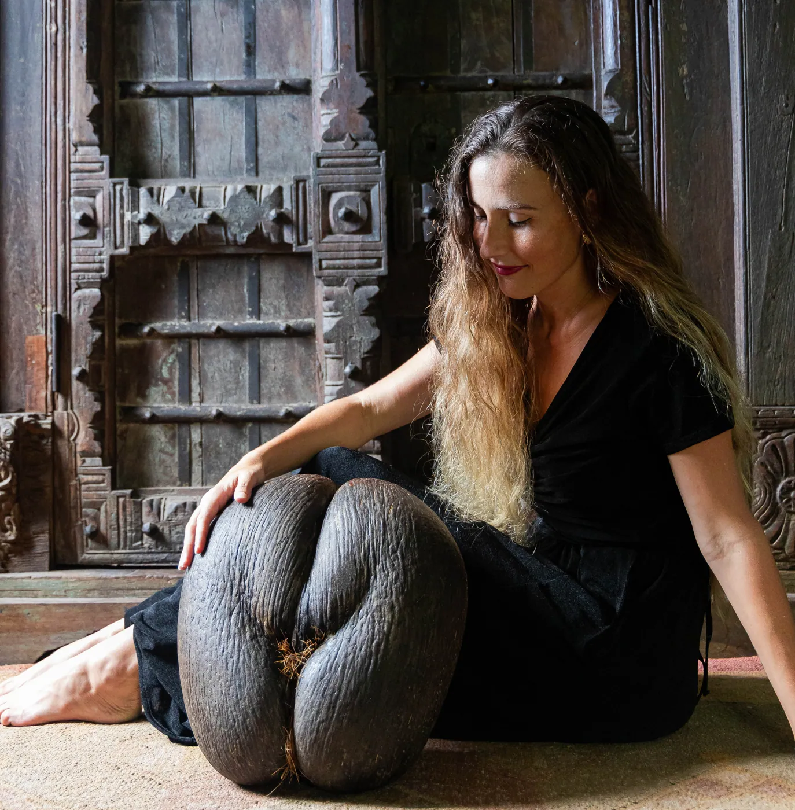

The Rare Treasure of the Coco de Mer


The Coco de Mer, also known as the "sea coconut" or "double coconut," is a stunning natural wonder native to the Seychelles Islands. Known for its distinct shape, which resembles a woman's hips, this remarkable seed has captivated people for centuries. Today, its rarity and mystique are driving up prices, making it a highly sought-after collector’s item and symbol of luxury. This article explores why owning a Coco de Mer is not only an investment in a unique natural artifact but also a symbol of prosperity, balance, and sensual energy.
A History of Royalty and Prestige
Throughout history, the Coco de Mer has been revered as a symbol of fertility, sensuality, and wealth. From European royalty to Middle Eastern sheiks and caliphs, the seed has long been associated with power and exclusivity.
Emperor Maximilian II of Austria is said to have owned a Coco de Mer, cementing its status as a prized possession among European nobility. In the Arab world, Coco de Mer was often presented as a gift to demonstrate power and affluence. The legendary sheiks of the Middle East, as well as the sultans of the Ottoman Empire, are reported to have kept these exotic seeds as symbols of their wealth and virility. Its mystical reputation—believed to hold aphrodisiac qualities—only enhanced its allure in royal courts.
The fruit’s distinct, curvaceous shape has led to it being likened to the female form, making it a popular token of fertility and sensuality. This connection to love, passion, and reproductive power has solidified the Coco de Mer as a cultural icon across different civilizations.

The Rising Price of Coco de Mer
In recent years, the price of Coco de Mer has seen a significant increase. These rare seeds, which can only be found in the Seychelles, are increasingly viewed as luxury items and spiritual artifacts. Today, our certified nuts typically range from US$500 to US$750, depending on their size, shape and overall quality. Some exceptional specimens, particularly those with a more symmetrical or “feminine” shape, may fetch even higher prices.
This price surge is due to several factors, primarily the rarity of the seed. The Coco de Mer comes from the Lodoicea maldivica palm, which takes 20-40 years to mature and bear fruit. Additionally, the Seychelles government has enacted strict laws to protect the Coco de Mer in order to preserve the species and prevent overharvesting, further limiting its availability.
As global interest in rare natural objects continues to rise, the demand for Coco de Mer has expanded beyond the traditional market of wealthy collectors and spiritual practitioners.
Coco de Mer: Nature’s Artwork
One of the most striking features of the Coco de Mer is its natural, sculptural beauty. The seed’s glossy, dark exterior and curvaceous shape resemble an art piece crafted by nature itself. Often compared to the shape of the female form, the Coco de Mer has been celebrated by artists and designers alike for its sensual aesthetic. It’s no wonder that many collectors view the Coco de Mer as a luxury object to display in their homes.
The seed is also seen as a spiritual artifact, often associated with fertility, love, and sensual balance. In Feng Shui, for example, the Coco de Mer is believed to attract positive energy, prosperity, and good fortune, particularly in matters related to love and intimacy. For this reason, it is often displayed prominently in homes, offices, or places of business.
Symbolism and Spiritual Meaning
For centuries, the Coco de Mer has been associated with a range of spiritual benefits, particularly love and fertility. The fruit’s unique shape and natural beauty have led many cultures to believe that it possesses mystical properties. Some spiritual practitioners regard the Coco de Mer as a tool for balancing sexual energy, enhancing intimacy, and promoting healthy relationships.
It’s also thought that the Coco de Mer helps bring prosperity and balance to the home. In Feng Shui, placing a Coco de Mer in your bedroom or living space is believed to invite luck, vitality, and a harmonious flow of sexual energy. In traditional Indian and African cultures, the seed is often linked to fertility rituals, further cementing its place as a symbol of fertility.
In folklore, the Coco de Mer has long been believed to be an aphrodisiac, a reputation that has only added to its allure. As such, the Coco de Mer is often placed in spaces intended to cultivate love, intimacy, and positive sexual energy.
The Modern Appeal of Coco de Mer
With its rising price, the Coco de Mer is becoming increasingly popular as both a luxury collectible and a symbol of sensual balance. As demand continues to grow, it has become a prized piece for collectors who appreciate its uniqueness, natural beauty, and historical significance.
Given its rarity, price, and mystical properties, owning a Coco de Mer today means owning a true piece of natural history. Whether you are seeking an exotic, meaningful object to enhance your living space, or you’re drawn to its symbolism of fertility and prosperity, the Coco de Mer offers both beauty and meaning in equal measure.